PROJECTS
The Chair’s research is organised in four lines. In each one, the ongoing projects, what they investigate and who is responsible for them.
Regulation and Innovation
In 2026, this front assesses the effectiveness and impacts of the AI bills before the National Congress, with emphasis on the institutional dimensions and on reconciling risk mitigation and control, on one side, with incentives and stimuli for innovation, on the other. In parallel, it designs a sandbox for the USP-Google environment and opens a dialogue with the São Paulo State Legislative Assembly on state-level legislation.
Assessment of AI regulation in Brazil
Assessment of the effectiveness and impacts of the bills before the National Congress, the general AI regulation and the AI Governance System proposed by the Executive, with emphasis on the institutional dimensions and on reconciling risk control with incentives for innovation.
- AI regulation in Brazil: assessment of Bill 2338, on guidelines for the ethical and responsible use of AI
- The SIA and the ANPD: assessment of Bill 6237/2025, which creates the National System for the Development, Regulation and Governance of Artificial Intelligence and defines the role of the ANPD
- AI regulation and innovation: assessment of the effectiveness of incentives for AI research and development, of funding and of regulatory sandboxes, in international comparison
To be defined
To be defined
To be defined
Sandbox USP-Google
Design of a sandbox for the USP-Google environment, including USP’s other AI research centres and Google’s initiatives, allowing controlled experimentation in different sectors and assessing the effectiveness of this instrument in promoting innovation.
- Design of the sandbox with USP’s AI research centres and Google’s initiatives
- Controlled experimentation in different sectors
- Support for research projects and startups
- Assessment of the sandbox’s effectiveness in promoting innovation
To be defined
To be defined
To be defined
State legislation: dialogue with Alesp
Dialogue with the São Paulo State Legislative Assembly to assess, as in other federal systems, whether specific AI legislation at state level is warranted.
- Dialogue with the São Paulo State Legislative Assembly
- Comparison with the experience of other federal systems
- Assessment of whether specific AI legislation at state level is warranted
To be defined
To be defined
To be defined
Labour Market
AI destroys or displaces jobs, through automation and tools that replace people, and creates others, above all in highly skilled activities that require training programmes. No sector will be spared the transformations of digitalisation and AI, while demand grows for computing, engineering and data science professionals, at both degree and technical level.
Impacts of AI on the labour market and on pay
First part of the studies: the broader impacts of the transformations brought by AI on the labour market and pay levels in Brazil.
- Map the differential impacts of AI across sectors and occupations and analyse the adequacy of earnings in those occupations
- Analyse the configuration of skills that influences AI adoption and identify qualification and training strategies for a just transition
- Adapt and replicate for Brazil, with RAIS and PNAD data, the ILO methodology for classifying occupations by gradient of exposure
- Identify occupations and sectors linked to the green economy and sustainability
- September 2026 · Report and seminar on the overall impact of AI on the labour market: the most exposed occupations and sectors
- November 2026 · Report and seminar on the impact of AI on green-economy occupations and sectors
Lead · Ian Prates (Anker Research Institute · CEBRAP)
Two postdoctoral researchers from USP or other institutions; public call for two doctoral candidates and two undergraduate students. Three-year work plan, funded by partners and additional resources.
To be defined
Skilled human resources in AI in Brazil
Second part of the studies: the state of skilled human resources in Brazil, in higher education and at the other levels of training.
- Diagnosis of AI research in Brazil and Latin America: scientific output and mapping of talent by institution, with international positioning
- AI training in Brazilian higher education: diagnosis and recent evolution of STEM and Computing
- AI and STEM training in general and vocational secondary education (Novo Ensino Médio)
- Possibilities and initiatives for large-scale AI literacy: USP, Univesp and others
- May 2026 · Report and seminar on the state of AI research in Brazil and Latin America
- October 2026 · Report and seminar on STEM training in Brazil: higher and secondary education
Principal investigator to be defined; two postdoctoral researchers from USP or other institutions and a public call for two undergraduate students, funded by partners and additional resources.
Potential partnership with Elsevier, RICYT-IDB and ECLAC
AI and Public Administration
Opportunities, challenges and risks of using AI in the design, implementation and evaluation of public policy in the Federal Public Administration, focusing on two strategic ministries: Health, and Justice and Public Security. The research combines a diagnosis of the present, through in-depth interviews with key actors in both areas, with foresight techniques to anticipate the future and shed light on the opportunities, challenges and risks specific to these processes.
AI@APF – The challenge of using Artificial Intelligence in the Federal Public Administration: sectoral analyses and foresight of future scenarios
This project investigates how Artificial Intelligence can support the design, implementation and evaluation of public policy in the Brazilian Federal Public Administration. Combining in-depth interviews with key actors and foresight techniques, the research seeks to identify the potential, limits and implications of using AI in the workings of the public machine and in its relationship with society. By linking a diagnosis of the present with foresight of future scenarios, the study aims to inform the strengthening of public AI governance and to broaden the theoretical debate on AI’s applications, conditions and effects in the public sector.
- Diagnosis of the present: in-depth interviews with key actors in the Ministries of Health and of Justice and Public Security
- Anticipating the future: scenarios built with foresight techniques
- Identification of the potential, limits and implications of AI use in the public machine and in its relationship with society
- Inputs for public AI governance and for the debate on its applications, conditions and effects in the public sector
To be defined
Lead · Rodrigo Brandão (Innovation and Competitiveness Observatory · IEA-USP)
Participants · Catarina Ianni Segatto (professor, DCP-USP), Mateus Henrique Amorim Moura Rocha (FFLCH · USP), Pedro Vivas (MA, DS-USP)
To be defined
National AI Incident Observatory
AI incidents are problems of many kinds associated with the proliferation of AI agents and tools: inaccuracy and lack of explainability, job losses, threats to privacy, risks to equity and justice, cybersecurity, political instability, national security, environmental and reputational impacts and intellectual property violations. Institutions such as the OECD (AI Incidents Monitor), UNESCO, the ILO, Stanford HAI, the Turing Institute, MIT and, in Brazil, OBIA at NIC.br monitor these risks. Together with partners, the Chair wants to help build incident-monitoring tools in the country.
National AI Incident Observatory: database and monitoring
Building a national database of AI incidents, through systematic collection from public sources, and monitoring incidents in selected themes, in exchange with similar observatories in Brazil and around the world.
- Analysis and assessment of the taxonomies and categories adopted internationally for AI risks and of the methodologies for identifying incidents
- Definition of coding procedures to create structured datasets for analysis
- Creation of a national database of AI incidents, with systematic collection from public sources: media, academic reports, court decisions and technical audits
- Comparative qualitative analysis of the data, to examine incident patterns, and quantitative descriptive metrics, to identify systemic vulnerabilities across sectors
- Monitoring of incidents in selected themes, notably public health and electoral processes
- Exchange and joint activities with similar observatories: CGI.br, OBIA, InternetLab, DAPP-FGV, CGEE, INCT-DSI, UNESCO, OECD, MIT, Stanford and IBICT, among others
- First half of 2026 · Opening workshop on AI risk taxonomies and incident identification methodologies
- 2026 and 2027 · Partnerships with other observatories and national and international institutions
- 2026 and 2027 · Workshops on impacts in health and in electoral processes
- November 2026 · First version of the Observatory’s database
- November 2026 · Launch seminar of the Observatory
Principal investigator to be defined, by call or invitation, to coordinate the front; public call for two postdoctoral researchers, one in 2026, funded by the partnership, and another from 2027, funded by agencies and other partners.
CGI.br, OBIA, PBIA, Ministry of Health and FGV DAPP
